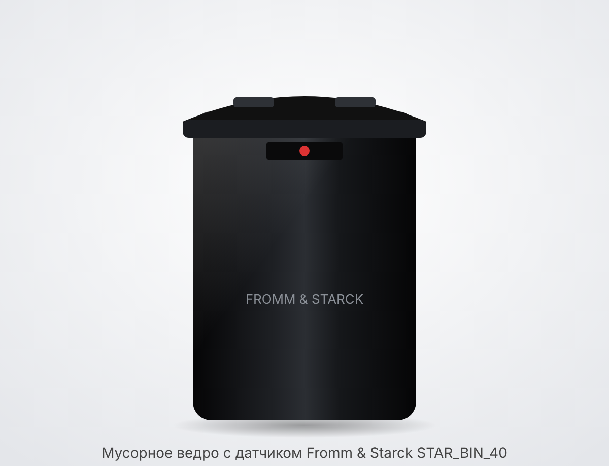
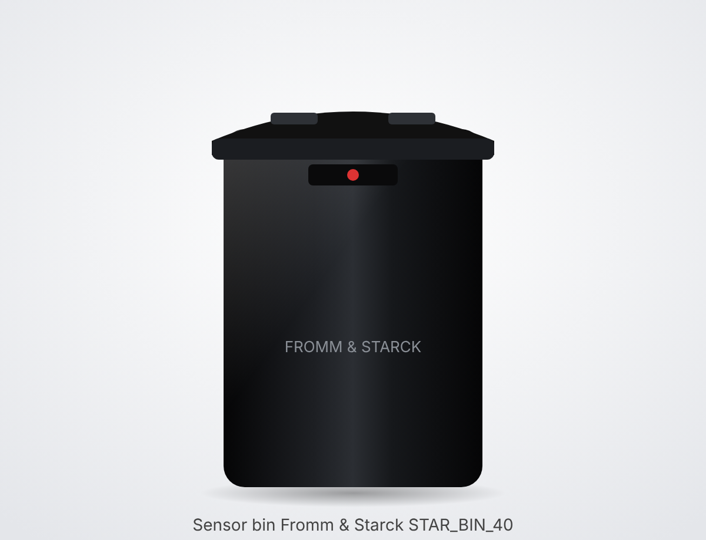

• Fromm & Starck «Automatic Sensor Bin», модель STAR_BIN_40; импортёр/изготовитель — expondo Polska sp. z o.o. sp. k. (Зелёна-Гура, Польша) • Одна общая инструкция (на manualslib, 11 стр.) охватывает серию STAR_BIN_40 / 41 / 42 / 43 — различаются объёмом, формой и цветом • Сестринская модель STAR_BIN_41 = 40 л, прямоугольная, серебристая (нерж. сталь), арт. expondo 10260210 • Внимание: один британский магазин (negx.co.uk) называет STAR_BIN_40 версией «50 L rectangular»; у expondo есть чёрная 50 л с датчиком 30 см. Сверьте объём и код на шильдике под ведром/на крышке • Сам PDF инструкции получить не удалось — данные ниже взяты из описаний сестринской модели STAR_BIN_41 той же серии; проверьте по бумажной инструкции
• Корпус: нержавеющая сталь / сталь с покрытием + пластик ABS (у STAR_BIN_41); у чёрной версии — углеродистая сталь (по описаниям продавцов) • Крышка с электроникой: инфракрасный датчик движения на крышке, LED-индикатор с обратным отсчётом до закрытия • Кнопка на крышке — держать крышку открытой (или закрытой) дольше, например при смене мешка; точные надписи кнопок (OPEN/CLOSE) — в инструкции не указано • Выключатель питания (ON/OFF) — в защищённом месте (у STAR_BIN_41) • Батарейный отсек: в блоке крышки [типично — снизу/сзади крышки, под сдвижной или защёлкивающейся крышечкой]; точное место — в инструкции не указано • Питание: 4 батарейки AA (LR6, «пальчиковые»), в комплект не входят • Сетевой адаптер / USB — в инструкции не указано (в описаниях не упоминается) • Держатель (обод) для мешка; плавное закрывание (soft-close), нескользящее дно, покрытие против отпечатков
• Вставьте 4 батарейки AA и включите выключатель • Поднесите руку к датчику на расстояние до ~30 см — крышка откроется автоматически • Крышка закрывается сама примерно через 5 секунд после того, как движение у датчика прекратилось (на LED виден отсчёт) • Кнопка на крышке — оставить крышку открытой подольше (для смены мешка или крупного мусора); повторное нажатие [типично] возвращает автоматический режим • Крышку можно открыть и вручную • [типично] Не загораживайте датчик и не ставьте ведро прямо у стены/шкафа под датчиком — будут ложные срабатывания
• Точная процедура — в инструкции не указано • [типично] Выключите выключатель, снимите/откройте блок крышки, откройте крышку батарейного отсека • [типично] Замените все 4 батарейки AA одновременно, одного типа и производителя, соблюдая полярность (+/−) • [типично] Закройте отсек, включите питание, проверьте срабатывание рукой • [типично] Признак разряда — крышка открывается медленно, не до конца или не реагирует • Старые батарейки сдавайте в пункт приёма, не в бытовой мусор
• Есть держатель (обод) для мешка — большой мешок заправляется через обод с напуском наружу • Рекомендуемый размер мешка — в инструкции не указано [типично: 40–50 л для этого объёма; 50–60 л удобнее, чтобы закрыть обод] • [типично] Мешок не должен свисать на датчик или мешать закрыванию крышки
• Перед чисткой выключите питание (выключатель) [типично: при долгом простое выньте батарейки] • Крышку с электроникой и датчиком водой не мыть и не погружать — только протирать слегка влажной тканью • Корпус — мягкая влажная салфетка с мягким средством; без абразивов и растворителей [типично] • Окно датчика держите чистым — грязь мешает срабатыванию [типично] • Перед установкой обратно всё насухо вытереть
• Таблица неисправностей — в инструкции не указано (PDF недоступен) • Крышка не открывается → [типично] проверьте выключатель, полярность и заряд батареек; протрите датчик; подносите руку прямо к датчику не дальше ~30 см • Крышка открывается сама / не закрывается → [типично] рядом движение, свисающий мешок, стена или яркий солнечный свет перед датчиком; уберите помехи; проверьте, не включён ли режим «держать открытой» кнопкой • Крышка открывается медленно / не до конца → [типично] разряжены батарейки — замените все 4 • Крышка не закрывается до конца → [типично] переполнен бак или мешок мешает
• Модель: STAR_BIN_40 (серия STAR_BIN_40–43) • Объём: 40 л (по вашему описанию; см. оговорку про 50 л в разделе «Модель») • Питание: 4 × AA (LR6), в комплект не входят (данные STAR_BIN_41) • Дальность датчика: до 30 см • Автозакрытие: ~5 с после прекращения движения • Размеры (STAR_BIN_41, 40 л): 32 × 24 × 61 см (Ш × Г × В); для STAR_BIN_40 — в инструкции не указано • Масса — в инструкции не указано • Материал: сталь + ABS (+ PP) • Цвет: чёрный

• Fromm & Starck "Automatic Sensor Bin", model STAR_BIN_40; importer/manufacturer — expondo Polska sp. z o.o. sp. k. (Zielona Góra, Poland) • One common manual (on manualslib, 11 pages) covers the STAR_BIN_40 / 41 / 42 / 43 series — they differ in capacity, shape and colour • Sister model STAR_BIN_41 = 40 l, rectangular, silver (stainless steel), expondo item no. 10260210 • Note: one UK shop (negx.co.uk) calls STAR_BIN_40 the "50 L rectangular" version; expondo has a black 50 l bin with a 30 cm sensor. Check the capacity and code on the rating plate under the bin/on the lid • The manual PDF itself could not be obtained — the data below are taken from descriptions of the sister model STAR_BIN_41 of the same series; check against the paper manual
• Body: stainless steel / coated steel + ABS plastic (STAR_BIN_41); the black version — carbon steel (according to sellers' descriptions) • Lid with electronics: infrared motion sensor on the lid, LED indicator with a countdown to closing • Button on the lid — keeps the lid open (or closed) longer, e.g. when changing the bag; exact button labels (OPEN/CLOSE) — not stated in the manual • Power switch (ON/OFF) — in a protected place (on STAR_BIN_41) • Battery compartment: in the lid unit [typical — under/at the back of the lid, under a sliding or snap-on cover]; exact location — not stated in the manual • Power: 4 AA batteries (LR6), not included • Mains adapter / USB — not stated in the manual (not mentioned in descriptions) • Bag holder (rim); soft-close lid, non-slip base, anti-fingerprint coating
• Insert 4 AA batteries and turn on the switch • Hold your hand up to the sensor at a distance of up to ~30 cm — the lid opens automatically • The lid closes by itself about 5 seconds after movement at the sensor stops (the countdown is shown on the LED) • Button on the lid — keep the lid open longer (to change the bag or for bulky rubbish); pressing again [typical] returns to automatic mode • The lid can also be opened by hand • [typical] Do not block the sensor and do not put the bin right against a wall/cupboard under the sensor — this causes false triggering
• Exact procedure — not stated in the manual • [typical] Turn off the switch, remove/open the lid unit, open the battery compartment cover • [typical] Replace all 4 AA batteries at the same time, same type and brand, observing polarity (+/−) • [typical] Close the compartment, switch on, check with your hand that it opens • [typical] Sign of flat batteries — the lid opens slowly, not fully, or does not respond • Take old batteries to a collection point, not to household waste
• There is a bag holder (rim) — a large bag is fitted through the rim with the edge folded over the outside • Recommended bag size — not stated in the manual [typical: 40–50 l for this capacity; 50–60 l is handier to cover the rim] • [typical] The bag must not hang over the sensor or prevent the lid from closing
• Turn off the power (switch) before cleaning [typical: remove the batteries if it is not used for a long time] • Do not wash or immerse the lid with the electronics and sensor — only wipe with a slightly damp cloth • Body — soft damp cloth with a mild detergent; no abrasives or solvents [typical] • Keep the sensor window clean — dirt interferes with triggering [typical] • Dry everything thoroughly before reassembling
• Troubleshooting table — not stated in the manual (PDF not available) • Lid does not open → [typical] check the switch, battery polarity and charge; wipe the sensor; hold your hand directly in front of the sensor no further than ~30 cm • Lid opens by itself / does not close → [typical] movement nearby, a hanging bag, a wall or bright sunlight in front of the sensor; remove the interference; check whether "keep open" mode has been switched on with the button • Lid opens slowly / not fully → [typical] batteries are flat — replace all 4 • Lid does not close fully → [typical] the bin is overfilled or the bag is in the way
• Model: STAR_BIN_40 (STAR_BIN_40–43 series) • Capacity: 40 l (according to your description; see the note about 50 l in the "Model" section) • Power: 4 × AA (LR6), not included (STAR_BIN_41 data) • Sensor range: up to 30 cm • Auto-close: ~5 s after movement stops • Dimensions (STAR_BIN_41, 40 l): 32 × 24 × 61 cm (W × D × H); for STAR_BIN_40 — not stated in the manual • Weight — not stated in the manual • Material: steel + ABS (+ PP) • Colour: black
• Fromm & Starck "Automatic Sensor Bin", malli STAR_BIN_40; maahantuoja/valmistaja — expondo Polska sp. z o.o. sp. k. (Zielona Góra, Puola) • Yksi yhteinen käyttöohje (manualslib-sivustolla, 11 s.) kattaa sarjan STAR_BIN_40 / 41 / 42 / 43 — mallit eroavat tilavuudeltaan, muodoltaan ja väriltään • Sisarmalli STAR_BIN_41 = 40 l, suorakulmainen, hopeanvärinen (ruostumaton teräs), expondon tuotenro 10260210 • Huom: yksi brittiläinen verkkokauppa (negx.co.uk) kutsuu STAR_BIN_40:tä "50 L rectangular" -versioksi; expondolla on musta 50 l malli 30 cm:n anturilla. Tarkista tilavuus ja koodi astian pohjassa/kannessa olevasta arvokilvestä • Itse käyttöohjeen PDF:ää ei saatu — alla olevat tiedot on otettu saman sarjan sisarmallin STAR_BIN_41 kuvauksista; tarkista paperisesta käyttöohjeesta
• Runko: ruostumaton teräs / pinnoitettu teräs + ABS-muovi (STAR_BIN_41); mustassa versiossa hiiliteräs (myyjien kuvausten mukaan) • Elektroniikalla varustettu kansi: kannessa infrapunaliiketunnistin, LED-näyttö, jossa lähtölaskenta kannen sulkeutumiseen • Kannen painike — pitää kannen auki (tai kiinni) pidempään, esim. pussia vaihdettaessa; painikkeiden tarkat merkinnät (OPEN/CLOSE) — ei mainittu käyttöohjeessa • Virtakytkin (ON/OFF) — suojatussa paikassa (STAR_BIN_41:ssä) • Paristokotelo: kansiyksikössä [tyypillinen — kannen alla/takana, liu'utettavan tai napsautettavan luukun alla]; tarkka paikka — ei mainittu käyttöohjeessa • Virta: 4 AA-paristoa (LR6, "sormiparistot"), eivät sisälly toimitukseen • Verkkolaite / USB — ei mainittu käyttöohjeessa (ei mainita kuvauksissa) • Pussinpidike (kehys); pehmeästi sulkeutuva kansi (soft-close), liukumaton pohja, sormenjälkiä hylkivä pinnoite
• Aseta 4 AA-paristoa paikoilleen ja kytke virtakytkin päälle • Vie käsi anturin eteen enintään ~30 cm:n etäisyydelle — kansi avautuu automaattisesti • Kansi sulkeutuu itsestään noin 5 sekuntia sen jälkeen, kun liike anturin edessä on loppunut (LED-näytössä näkyy lähtölaskenta) • Kannen painike — pitää kannen auki pidempään (pussin vaihtoa tai isoja roskia varten); uusi painallus [tyypillinen] palauttaa automaattitilan • Kannen voi avata myös käsin • [tyypillinen] Älä peitä anturia äläkä sijoita astiaa aivan seinän/kaapin viereen anturin alle — se aiheuttaa aiheettomia avautumisia
• Tarkka menettely — ei mainittu käyttöohjeessa • [tyypillinen] Kytke virtakytkin pois, irrota/avaa kansiyksikkö, avaa paristokotelon luukku • [tyypillinen] Vaihda kaikki 4 AA-paristoa kerralla, samaa tyyppiä ja samaa merkkiä, napaisuus (+/−) huomioiden • [tyypillinen] Sulje kotelo, kytke virta päälle ja kokeile kädellä, että kansi avautuu • [tyypillinen] Merkki tyhjistä paristoista — kansi avautuu hitaasti, ei kokonaan tai ei reagoi lainkaan • Vie vanhat paristot keräyspisteeseen, ei sekajätteeseen
• Astiassa on pussinpidike (kehys) — iso pussi pujotetaan kehyksen läpi ja reunat käännetään ulkopuolelle • Suositeltu pussikoko — ei mainittu käyttöohjeessa [tyypillinen: tälle tilavuudelle 40–50 l; 50–60 l on kätevämpi, jotta kehys peittyy] • [tyypillinen] Pussi ei saa roikkua anturin päällä eikä estää kannen sulkeutumista
• Katkaise virta (virtakytkin) ennen puhdistusta [tyypillinen: jos astia on pitkään käyttämättä, poista paristot] • Elektroniikalla ja anturilla varustettua kantta ei saa pestä vedellä eikä upottaa veteen — pyyhi vain kevyesti kostealla liinalla • Runko — pehmeä kostea liina ja mieto pesuaine; ei hankaavia aineita eikä liuottimia [tyypillinen] • Pidä anturin ikkuna puhtaana — lika haittaa tunnistusta [tyypillinen] • Kuivaa kaikki huolellisesti ennen kokoamista
• Vianetsintätaulukko — ei mainittu käyttöohjeessa (PDF ei saatavilla) • Kansi ei avaudu → [tyypillinen] tarkista virtakytkin sekä paristojen napaisuus ja varaus; pyyhi anturi; vie käsi suoraan anturin eteen enintään ~30 cm:n päähän • Kansi avautuu itsestään / ei sulkeudu → [tyypillinen] lähellä on liikettä, roikkuva pussi, seinä tai kirkas auringonvalo anturin edessä; poista häiriötekijät; tarkista, onko painikkeella kytketty päälle "pidä auki" -tila • Kansi avautuu hitaasti / ei kokonaan → [tyypillinen] paristot ovat tyhjät — vaihda kaikki 4 • Kansi ei sulkeudu kokonaan → [tyypillinen] astia on liian täynnä tai pussi on tiellä
• Malli: STAR_BIN_40 (sarja STAR_BIN_40–43) • Tilavuus: 40 l (kuvauksesi mukaan; ks. huomautus 50 litrasta kohdassa "Malli") • Virta: 4 × AA (LR6), eivät sisälly toimitukseen (STAR_BIN_41:n tiedot) • Anturin kantama: enintään 30 cm • Automaattinen sulkeutuminen: ~5 s liikkeen loppumisen jälkeen • Mitat (STAR_BIN_41, 40 l): 32 × 24 × 61 cm (L × S × K); STAR_BIN_40:n osalta — ei mainittu käyttöohjeessa • Paino — ei mainittu käyttöohjeessa • Materiaali: teräs + ABS (+ PP) • Väri: musta